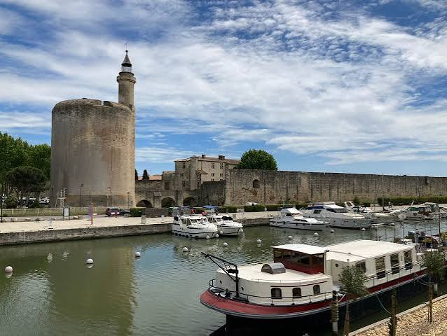

Tour de
Constance


⟹ Histoire et mémoire huguenote ⟸
Une forteresse royale au bord de la Méditerranée. La tour de Constance est le donjon d’Aigues-Mortes, cité fondée au XIIIe siècle par Louis IX, futur Saint Louis. La ville donne alors au royaume de France un accès stratégique à la Méditerranée.
Des « eaux mortes » à la ville royale. En 1240, Louis IX obtient ces terres de l’abbaye de Psalmody par un échange. Il accorde en 1246 une charte de franchises pour attirer des habitants dans un site peu hospitalier, entouré de marais et de salins, d’où vient le nom d’Aigues-Mortes, les « eaux mortes ». La tour est élevée dans ces mêmes années 1240, avec des murs d’environ 6 mètres d’épaisseur et deux grandes salles voûtées superposées.
Un donjon devenu phare. Construite au cœur des fortifications, la tour a d’abord une fonction militaire et politique. Sa terrasse, qui culmine à environ 26 mètres, conserve le souvenir de sa fonction de phare destiné à signaler le port aux navires.
Le port des croisades. C’est d’Aigues-Mortes que Louis IX s’embarque en 1248 pour la septième croisade, puis en 1270 pour la huitième, au cours de laquelle il meurt devant Tunis. Ses successeurs, Philippe III le Hardi puis Philippe IV le Bel, font entourer la ville d’une enceinte complète à la fin du XIIIe siècle, l’une des mieux conservées d’Europe.
Des Templiers au déclin du port. Au début du XIVe siècle, des Templiers arrêtés sur ordre de Philippe le Bel sont détenus à Aigues-Mortes. Par la suite, l’ensablement des chenaux et le rattachement de Marseille au royaume à la fin du XVe siècle font perdre à la ville son rôle maritime. La tour change alors de fonction et sert de plus en plus de prison.

Une prison protestante. Après la Révocation de l’édit de Nantes en 1685, la tour devient une prison pour les protestants. Des femmes y sont enfermées pendant de longues années. Marie Durand, arrêtée en 1730, y demeure trente-huit ans avant sa libération en 1768.
La visite du prince de Beauvau. Des Camisards y sont aussi enfermés : en 1705, Abraham Mazel et plusieurs compagnons parviennent à s’en évader. En 1767, le prince de Beauvau, gouverneur du Languedoc, visite la tour accompagné du chevalier de Boufflers, qui décrit la détresse des prisonnières. Contre l’avis de la Cour, il fait libérer plusieurs d’entre elles ; les dernières quittent la tour à la fin des années 1760.
Un lieu de mémoire. La tour conserve des graffitis de prisonniers et la célèbre inscription « REGISTER », traditionnellement attribuée à Marie Durand mais dont l’attribution n’est pas certaine. Aujourd’hui, elle fait partie du site des Tours et remparts d’Aigues-Mortes, administré par le Centre des monuments nationaux.
Marie Durand et les prisonnières : Marie Durand est emprisonnée à la tour de Constance de 1730 à 1768. Les Archives départementales du Gard indiquent qu’elle y vécut avec une vingtaine d’autres femmes, dans des conditions difficiles.
« REGISTER » : ou « résister » en occitan, c’est le graffiti le plus célèbre de la tour. Son attribution à Marie Durand est traditionnelle mais demeure incertaine.
Deux histoires en un lieu : la tour est devenue l’un des lieux les plus connus de la mémoire huguenote en France, en associant l’histoire militaire médiévale d’Aigues-Mortes à celle des persécutions religieuses de l’époque moderne.
Adresse Tours et remparts d’Aigues-Mortes, 30220 Aigues-Mortes, au cœur de la cité fortifiée.
Ouverture toute l’année selon les horaires du Centre des monuments nationaux ; vérifier horaires et tarifs sur la billetterie officielle.
Visite tour de Constance incluse dans le billet Tours et remparts ; prévoir des escaliers étroits jusqu’à la terrasse.
À proximité les remparts et leurs panoramas, les salins et la Camargue, le Grau-du-Roi, et le Musée du Désert à Mialet pour approfondir la mémoire protestante.